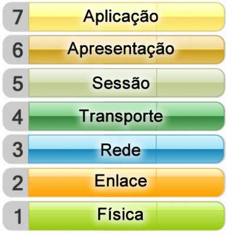
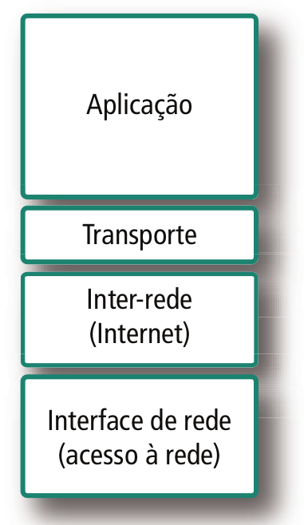

É de conhecimento geral que nos últimos vinte anos houve um grande aumento na quantidade e no tamanho das redes de computadores. O problema é que esse crescimento não foi implementado de maneira ordenada pelos mais diversos fabricantes e fornecedores, ou seja, cada um implementava seu hardware e software da maneira que lhe fosse mais vantajoso.
Foi então que a ISO (a International Organization for Standardization) lançou em 1984 o modelo de referência OSI (Open Systems Interconnection). Como o próprio nome diz, esse modelo serve de referência para que os desenvolvedores programem redes que podem se comunicar e trabalhar independente do fabricante. O grande segredo é padronização e interoperabilidade.
Os modelos de referência OSI e TCP/IP estão diretamente ligados a forma como entendemos ser o termo Redes de Computadores.
O Modelo de referência da ISO
Tem como principal objetivo ser um modelo padrão para protocolos de comunicação entre diversos tipos de sistema, garantindo a comunicação end-to-end, o Modelo OSI (em inglês Open Systems Interconnection) foi lançado em 1984 pela Organização Internacional para a Normalização (em inglês International Organization for Standardization). Trata-se de uma arquitetura modelo que divide as redes de computadores em 7 camadas para obter camadas de abstração. Cada protocolo realiza a inserção de uma funcionalidade assinalada a uma camada específica. Este modelo exige o cumprimento de etapas para atingir a compatibilidade, portabilidade, interoperabilidade e escalabilidade. São elas: a definição do modelo, definição dos protocolos de camada e a seleção de perfis funcionais. A primeira delas define o que a camada realmente deve fazer. A segunda faz a definição dos componentes que fazem parte do modelo, enquanto que a terceira é realizada pelos órgãos de padronização de cada país.
TCP/IP (Transmission Control Protocol/Internet Protocol)
Possui importância histórica, pois permitiu que vários outros setores se desenvolvessem, sendo alguns deles: industrias telefônicas, energia elétrica, estradas de ferro, etc. Foi desenvolvido pelo Departamento de Defesa dos Estados Unidos da America, com o intuito de ser uma rede que possa sobreviver em condições “extremamente extremas”, um bom exemplo que vários sites dão é uma guerra nuclear. Diferente do modelo OSI, este conta apenas com 4 camadas. Pode-se notar que: o número de camadas caiu de sete para três e que alguns nomes são iguais, mas cada qual tem sua função característica, que, se confundida, pode causar erros.
Modelos
- Modelo de referência da ISO 
- TCP/IP (Transmission Control Protocol/Internet Protocol) 
- Modelo OSI / TCP-IP

Para mais informações e contéudos exclusivos deste mundo vasto de redes Cadastre-se aqui
Leia Modelo OSI e TCP/IP